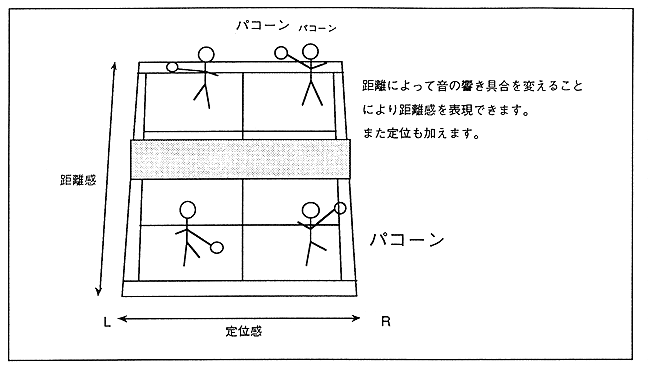

Since SCSP is equipped with a high-performance digital mixer, the localization of each sound can be controlled in real time. Therefore, sound effects can be output with a localization that matches the position of the character on the screen. This process can also be performed by the DSP. In that case, since you can set a finer localization, you can move the sound smoothly even when the character moves slowly. By adding reverb to this localization, it becomes possible to give a sense of depth (distance).
Figure 3.27 Usage example in tennis game

In addition, it is possible to express the size of the room, the outside, and the space depending on the type of reverb. In addition, there are halls, stages, rooms, iron plates, etc. for the type of reverb itself.